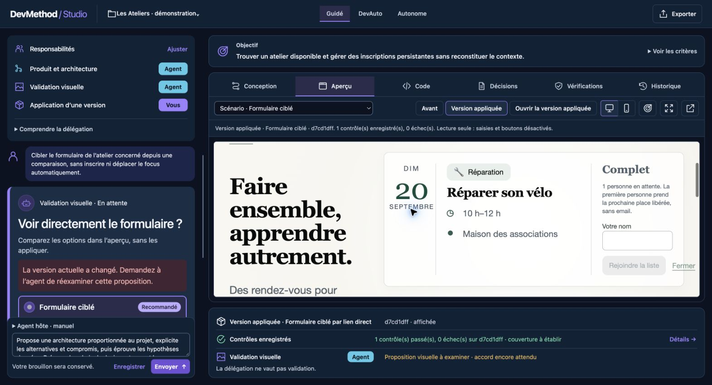
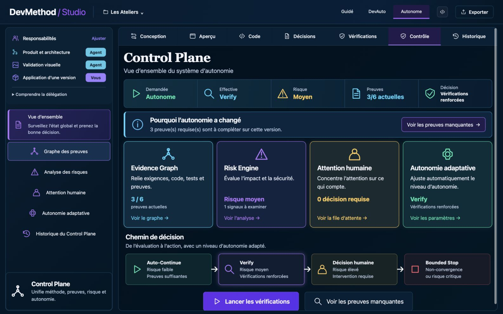
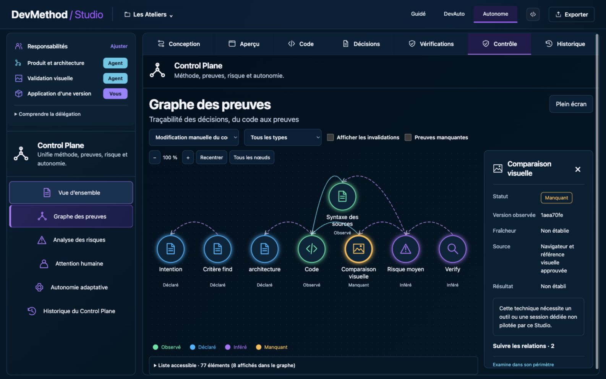
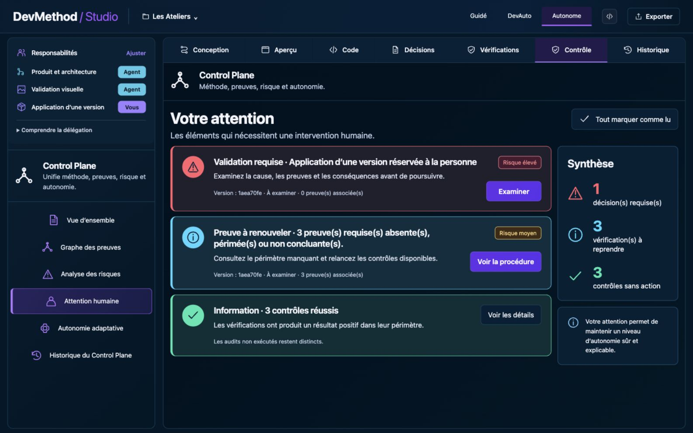
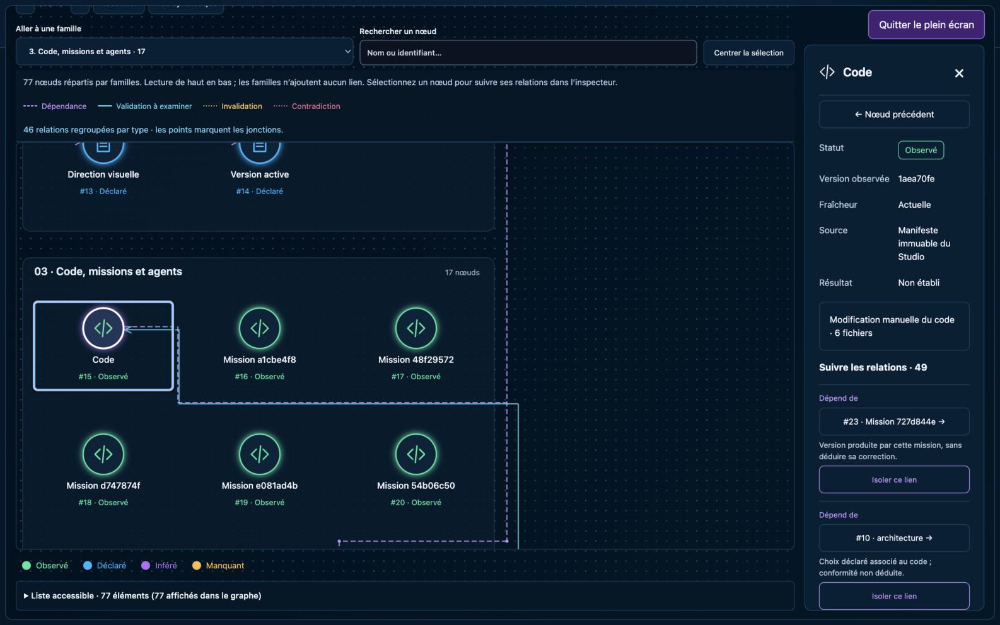

Comprendre DevMethod comme un système, pas comme une pile de fichiers.
Ce manuel explique la promesse, la méthode, le Studio, le Control Plane et les chemins du code. Il sépare ce qui est déclaré, implémenté, vérifié et publié.
explicable
Une capture montre une interface. Un test démontre un scénario. Un ADR explique un choix. Aucun de ces éléments ne prouve seul la qualité globale du produit.
Des agents rapides, mais un travail qui reste gouvernable.
La promesse
DevMethod aide une personne et un agent à transformer un besoin en changement vérifiable, en conservant décisions, responsabilités, preuves et prochaine action.
Quatre composants, quatre responsabilités
Méthode
Structure les décisions, la livraison et la vérification.
Skills
Rendent quatorze étapes visibles dans l'agent.
CLI local
Installe, inspecte et lance le Studio.
Studio
Relie le besoin, le code et ses preuves.
Ce que DevMethod apporte
- Des frontières de mission explicites
- Des décisions avant les détails dépendants
- Des preuves liées à la révision inspectée
- Des arrêts et reprises compréhensibles
Ce qu'il ne promet pas
- Certification automatique du logiciel
- Déploiement ou publication sans autorisation
- Compréhension parfaite des dépendances
- Supériorité comparative déjà démontrée
Décider, livrer, vérifier, corriger et reprendre.
Les trois modes de collaboration
Les choix et résultats utiles sont discutés avec la personne.
Les choix structurants sont acceptés, puis l'agent livre dans ce cadre.
Les choix réversibles sont délégués ; les mêmes gates restent applicables.
Le mode demandé organise la collaboration. Le Control Plane calcule séparément l'autonomie effective d'une action.
Du besoin aux fichiers exécutés, dans un même espace.

Besoin, critères et responsabilités.
Application, candidate et comparaison.
Fichiers, architecture, flux et impact.
Choix, raisons, sources et statut.
Contrôles, preuves et limites.
Risque, attention et autonomie.
Missions, versions et reprise.
Une version n'est pas une preuve
Une mission peut livrer une candidate sans démontrer sa correction. Les contrôles restent attachés à leur révision.
Voir pourquoi l'agent continue, vérifie, demande ou s'arrête.



La politique v1 en quatre priorités
- Bounded StopArrêt persistant, refus ou risque critique
- Human DecisionRisque élevé ou responsabilité réservée
- VerifyRisque moyen ou preuves insuffisantes
- Auto-ContinueRisque faible, preuves et délégation valides
Une preuve favorable est observée, actuelle et réussie. Dix succès ne compensent pas un signal élevé encore actif.
Un package de méthode et un produit Studio local.
Trois frontières à protéger
Domaine / adaptateur
Les règles pures ne lisent ni HTTP, ni disque, ni UI.
Déclaration / observation
Une progression déclarée ne devient jamais un test réussi.
Permission / autonomie
Le Control Plane ne remplace pas une permission MCP.
Commencer par les propriétaires, pas par 200 fichiers.
CLI et installation
Commandes, payload et diagnostics.
src/cli.tscli-commands.tsinit.tsMéthode exécutable
Missions, checkpoints, preuves et guard.
mission.tscheckpoint.tsguard.tsStudio serveur
HTTP, registre, jobs et qualité.
server.mjsdomain.mjsstore.mjsStudio React
Îlots et composants métier.
project-widget.tsxquality-widget.tsxcontrol-widget.tsxControl Plane
Contrats, politique, sources et vues.
contracts.tsengine.tspolicy.tsTests et preuves
Tests Node, UI et mission.
control-plane.test.mjsstudio-control-plane.test.mjsrésultatsContrat métier → règle pure → adaptateur serveur → route → hook UI → vue → tests → navigateur.
Modifier une tranche verticale et conserver ses preuves.
npm ci
npm run build
npm test
npm run lint
npm run format:check
npm run check:docs
npm pack --dry-runLire les règles
CONTRIBUTING, l'ADR, la mission et l'état Git.
Définir le résultat
Relier chaque critère à un contrôle capable d'échouer.
Livrer verticalement
Règle, adaptateur, interface et test dans une intention.
Vérifier au bon niveau
Pur pour la règle, HTTP pour la route, navigateur pour l'UI.
Relire et transmettre
Diff, secrets, compatibilité et état exact de l'intégration.
À faire
- Réutiliser les stores existants
- Partager les types avec React
- Garder les règles pures
- Tester le risque réel
À éviter
- Recalculer le métier dans la vue
- Créer un second registre
- Présenter une fixture comme preuve réelle
- Désactiver une gate
Choisir le contrôle qui peut réellement révéler le défaut.
| Risque | Contrôle minimum | Ne prouve pas |
|---|---|---|
| Politique pure | Invariants et cas négatifs | Le câblage HTTP |
| Persistance | Écriture, conflit et redémarrage | La production |
| Route | Contrat HTTP et erreurs | L'UX réelle |
| Interface | DOM, navigateur et clavier | La suffisance métier |
| Release | Archive, CI et smoke exacts | La publication avant son exécution |

Reliez le critère au contrôle, à la révision, à l'environnement et aux limites.
Suivre une action de l'écran jusqu'à son effet durable.
Cinq traces qu'un mainteneur doit savoir reconstruire
Lecture Control Plane
Polling React → route → sources → moteur pur → commit conditionnel.
Décision humaine
Version + snapshot → intervention immuable → recalcul ciblé.
Vérification
Contrôle exécutable → journal de qualité → preuve renouvelée.
Candidate
Job → révision → gates → application, jamais simple fin de tâche.
Action MCP
Sélection → permission → admission → schéma → transport → journal.
Pour chaque défaut, nommez l'entrée, le propriétaire du contrat, le propriétaire de la règle, l'effet durable possible et le contrôle qui peut réfuter votre hypothèse.
Comprendre les propriétés protégées avant de modifier les fichiers.
| Frontière | Invariant | Conséquence d'une violation |
|---|---|---|
| Mission | scope, critères, sources et arrêt sont bornés | travail non gouvernable |
| Preuve | observed + current + passed | faux vert |
| Store | version, validation, atomicité, append-only | perte ou réécriture d'histoire |
| Acteurs | un worker ne devient pas la personne | fausse approbation |
| Control Plane | l'humain ne fabrique pas une preuve | risque masqué |
| UI | une réponse périmée ne remplace pas l'état courant | décision sur données anciennes |
Double protection contre les décisions obsolètes
État durable
- Écriture temporaire puis renommage
- Verrou par workspace
- Liens symboliques refusés
- Transitions historiques contrôlées
Sécurité locale
- Loopback uniquement
- Origine contrôlée
- Token worker séparé
- Corps et schémas bornés
Diagnostiquer la frontière fautive avant de relancer.
Préserver
État, verrou, journal, version, snapshot et sortie d'erreur.
Classer
Entrée, contrat, règle, persistance, transport ou présentation.
Formuler
Une hypothèse et une observation capable de la réfuter.
Corriger borné
Une modification cohérente, puis le contrôle affecté.
Réconcilier
Effets externes et décisions humaines avant toute reprise.
Signaux fréquents
- 409 : version ou snapshot périmé
- Verify : preuve requise insuffisante
- Human Decision : risque ou responsabilité
- Bounded Stop : convergence ou critique
Réactions dangereuses
- écraser studio.json
- supprimer un verrou actif
- relancer un effet MCP incertain
- transformer stale en success dans l'UI
Dix exercices reproductibles pour prouver la maîtrise.
- Raconter le système et ses non-promesses.
- Tracer une lecture Control Plane complète.
- Invalider une preuve par sa dépendance.
- Provoquer un conflit de version sans perte d'état.
- Ajouter un signal de risque sans règle dupliquée.
- Démontrer pourquoi « passed » seul crée un faux vert.
- Tester une route contre origine, rôle et forme hostiles.
- Protéger un widget contre une réponse tardive.
- Réconcilier une action MCP à résultat incertain.
- Préparer une candidate exacte sans la publier.
La maîtrise se démontre par un changement relu, des invariants explicités, un diagnostic reproductible et des preuves liées à la bonne révision.
Savoir où changer, quoi revalider et quand s'arrêter.
Autorité des sources
Le sujet décide quelle source fait foi.
Invalidation sélective
Un changement invalide ses dépendances, pas tout l'historique.
Compatibilité honnête
Installation, découverte et comportement sont distincts.
Arrêt borné
Un échec répété exige diagnostic et réconciliation.
Release exacte
Archive, commit et CI soutiennent une candidate précise.
Évolution
Une nouvelle frontière exige décision et preuves renouvelées.
Exercices de maîtrise
- Suivre une intention jusqu'à une décision d'autonomie.
- Identifier les fichiers et tests pour un nouveau signal de risque.
- Expliquer pourquoi « lu » ne signifie pas « résolu ».
- Provoquer une preuve périmée et observer Verify.
- Installer un package jetable et distinguer installation et host vérifié.
- Préparer une candidate sans confondre merge, tag et publication.
Auto-évaluation avant démonstration
Ces cases préparent l'examen ; elles ne certifient aucun niveau.